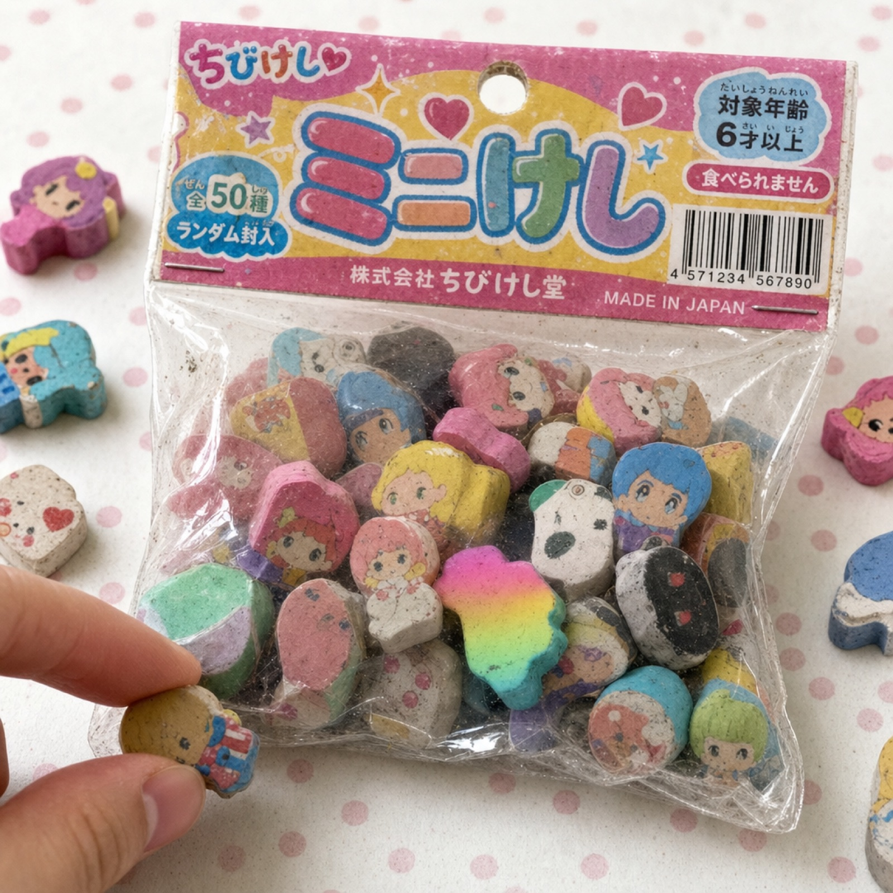
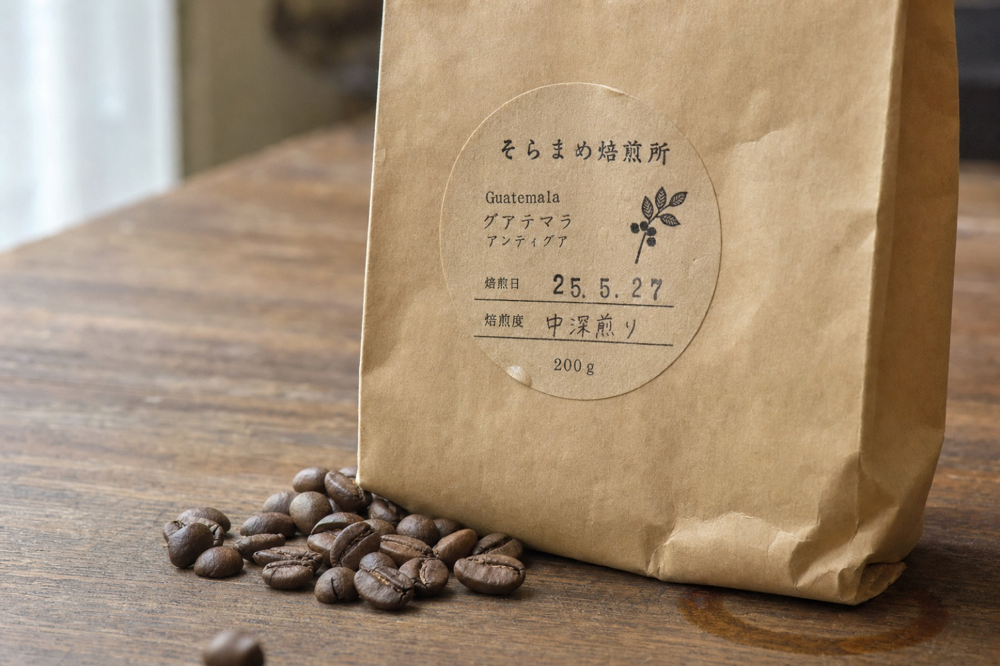
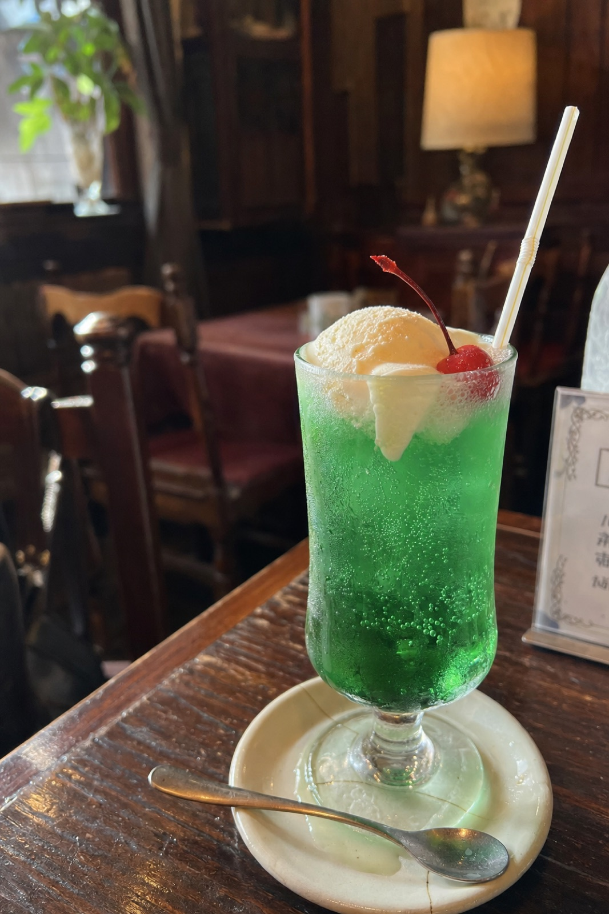
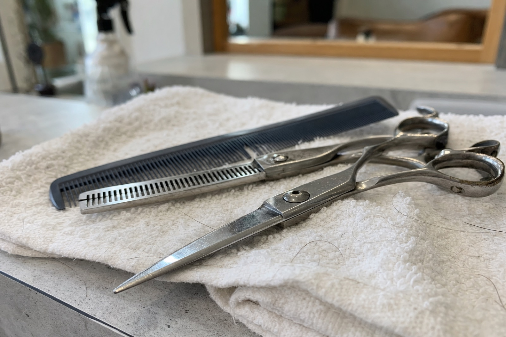
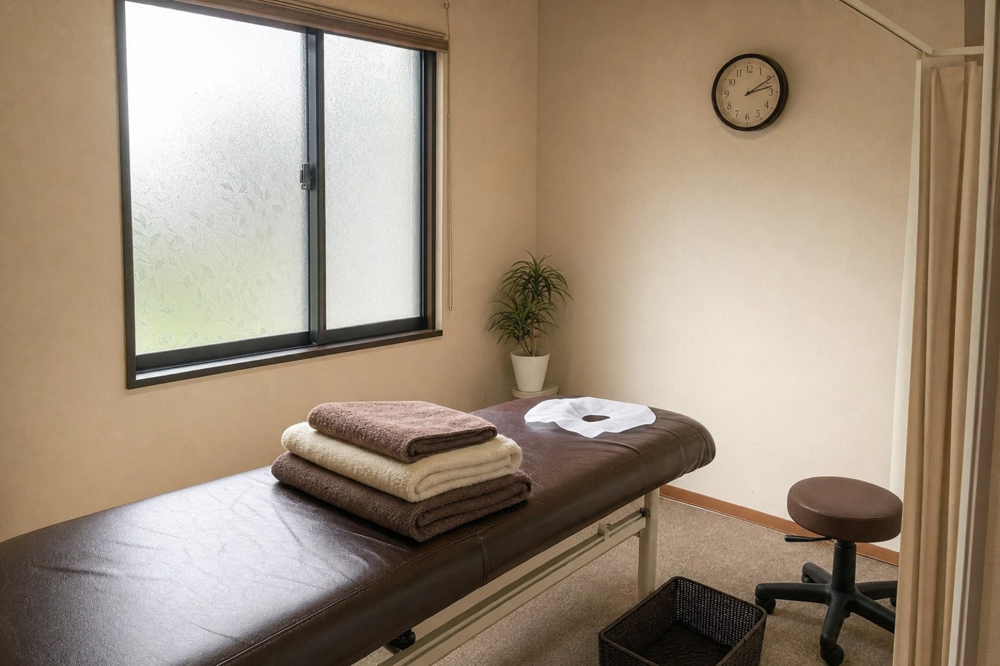

無料素材 ／ 全5点
どこにも実在しない喫茶店、焙煎所、美容室、治療院、駄菓子屋の写真です。すべてAIで作りました。「載せる写真がない」という理由だけでホームページを諦めていた人が、まず1枚置くために配っています。
この5枚に写っている店・商品は実在しません。見本サイトや練習用の仮置きとしては自由に使えますが、実在するお店の「うちの商品」としては使わないでください。お客さんが見るのは、その店に本当にあるものの写真であるべきです。
それぞれ、実写に見せるために何の「粗」を指定したかを併記しています。きれいに作るより、ここを指定するほうが効きます。





同じ手で、自分の業種の写真を作れます。特別なツールは要りません。
AIっぽさは、きれいすぎることから来ます。だから、現物にある粗を名指しで指定します。
| 指定する粗 | 何が起きるか |
|---|---|
| 印刷ズレ・インクのムラ | 版ズレが再現され、量産品の安っぽさが出る |
| 完全マットな素材 | CG特有のテカリが消える |
| 微細な粒子・粉・削れ | 手に取られた痕跡が出て、使われている物になる |
| ビニールのシワ・曇り | 透明素材がCGっぽさの最大の敵。シワで解決する |
| 一部に入った空気 | 袋が平面でなく立体になる |
| シールのヨレ・気泡 | 機械でなく人が貼った感じが出る |
| 結露・水たまり・溶け | 時間が経っている＝その場に本当にあったことになる |
そして、AIの既定は「良く見せる」ほうに寄ります。逆向きに引っ張る禁止指定を必ず添えます。
avoid: glossy plastic rendering, luxurious finish,
perfectly flawless printing, studio perfection,
CGI gloss, any real brand or logo
output: 実在する商品にしか見えないレベル
架空の会社名を指定しないと、AIはパッケージに実在する企業名を書きます。最初の生成で、実在する玩具メーカーの社名が入りました。架空の社名を名指しで指定し、実在名を禁止してください。
キャラクター物も既存キャラに寄ります。配る素材では、キャラクターを避けて食品・日用品・店の道具にするのが安全です。
指先が1つをつまもうとしている。これだけで、被写体が「撮影された商品」から「生活の中の物」に変わります。ほかに効いたのは、中身が少しこぼれていること、一部がフレームから切れていること、目立つ個体を1つだけ混ぜることでした。
いいです。架空の店の写真なので、架空の見本にはそのまま合います。
いいです。あとで実物の写真に差し替える前提なら問題ありません。
要りません。改変も自由です。連絡も不要です。
だめです。売っていない物の写真を載せると、お客さんを騙すことになります。